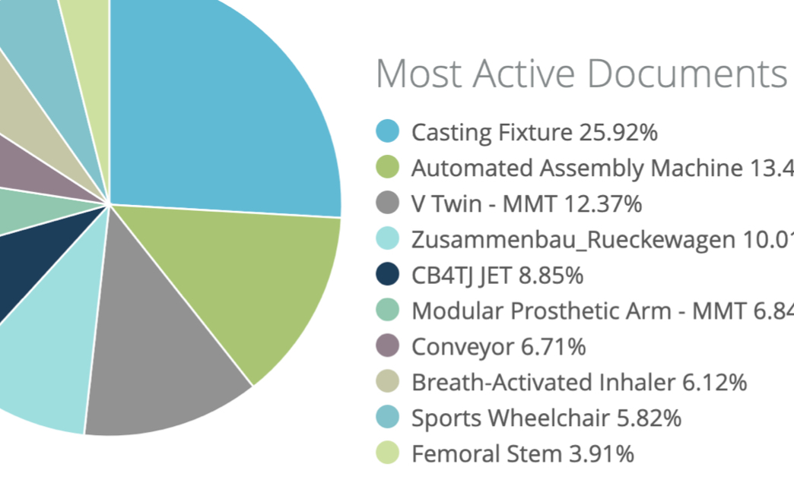
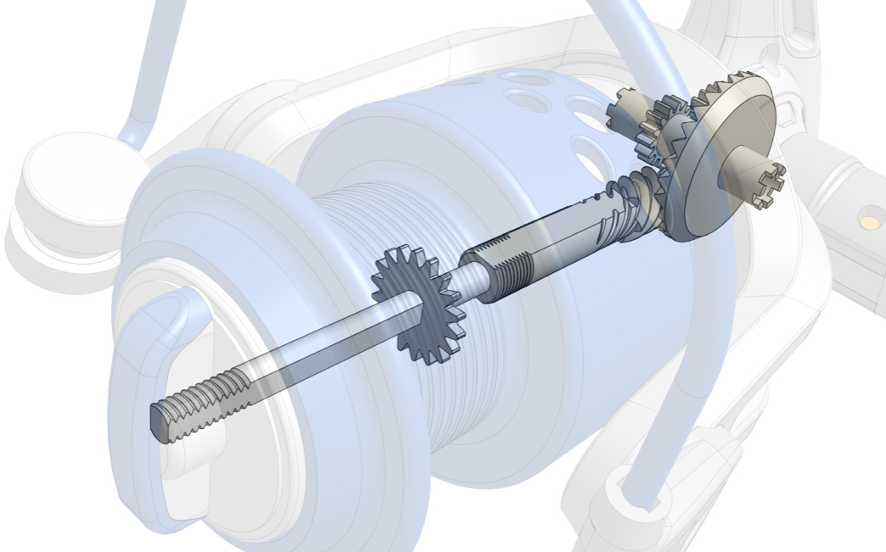
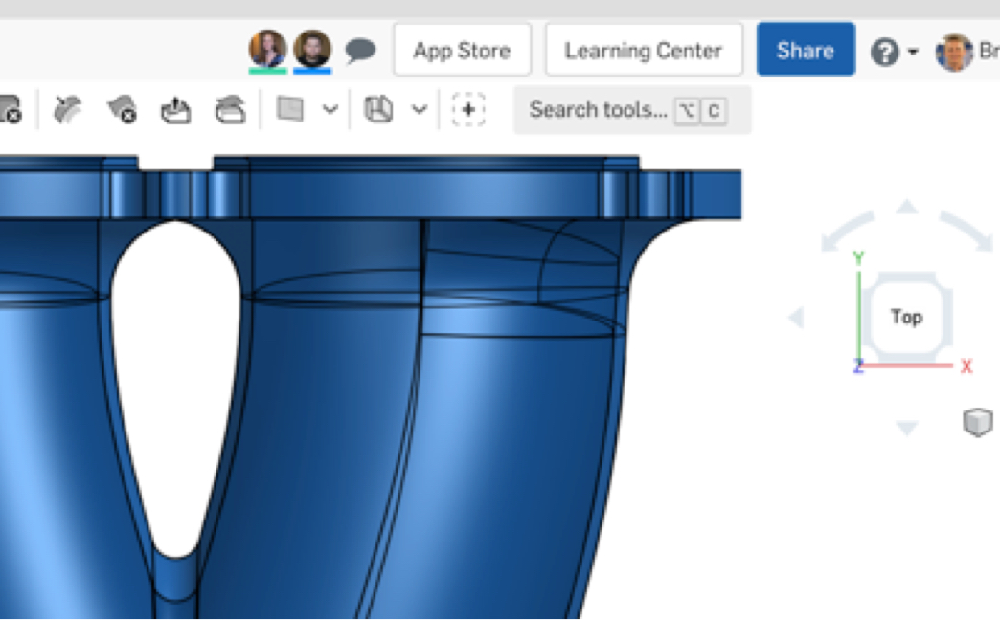
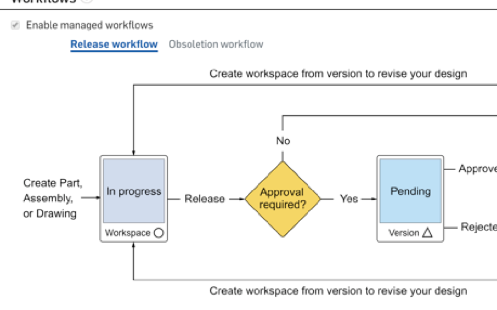
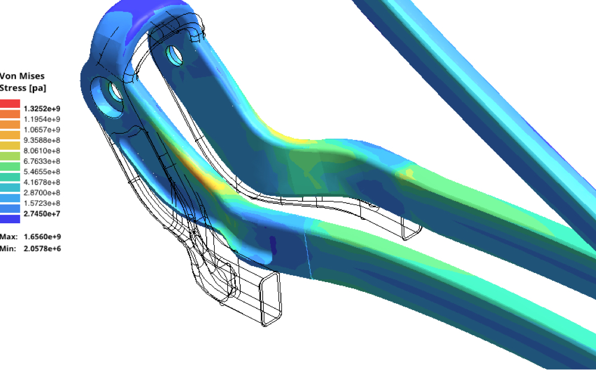
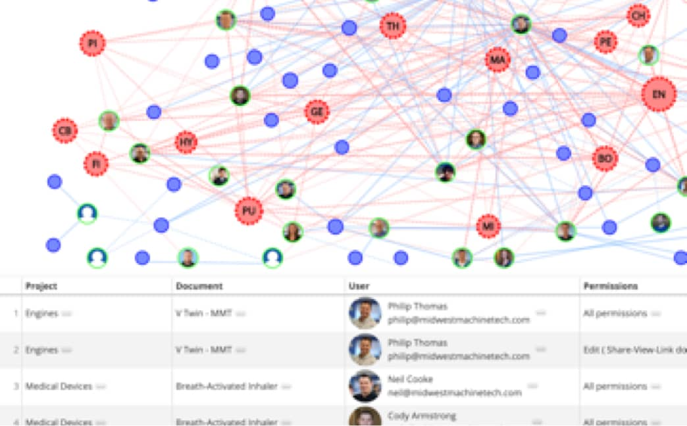

HW1 <<
Previous Next >> Onshape安裝配置
Onshape 繪圖
Onshape緣起說明與介紹
Onshape is the first and only product development platform that delivers professional-grade CAD capabilities with integrated data management, powering more agile design processes at lower costs. With Onshape, you are now free to innovate while simultaneously collaborating with other stakeholders, without fear of design stalls, system crashes, or data losses. Ever.
Built natively for the cloud, Onshape untethers you from the limits of file-based CAD design processes, giving you the freedom to create on any device, anytime, anywhere.
Onshape是一種Full Cloud的網路CAD設計平台，可以在maker開發完自己的想法時使用，但是如果想導入企業中，可能需要點時間，尤其老牌或比較大的企業可能需要的時間更久，因Onshape的優點，在反面來看也是它的缺點。雖然鼓勵開放想法可以利用群眾的力量達到更好的想法與作品，供大家使用，但憑良心講，這很困難。
機構跟產品設計的圖面其實看到只是一個簡單的3D圖面，並沒有多困難，但後面可能花費數十年，以及很多的金錢與心力才完成，不清楚的人可能看不懂，知道的人一眼就能看出重點，這對大部份企業來說會很傷。所以他們會希望這重要的“資產”放在自己可以控管的”地方“，而不是”雲“或”網路上“，這需要時間去改變。
但Onshape可以使有這專長的人分享他解決問題的專長，而保留他的重點知識，這有點八股，但有時”重點知識“不是我們的，而我們只是正好知道的人。
現在各國在進行知識、教育或基礎建設的未來發展上，目前大多在於軟體方面，但有一件事實是，軟體發展雖有無限的可能性，但會受限於硬體與機構的發展，像Google推出SketchUp雖不能滿足大部份的需求，但你看Google地圖上的立體建築物有多少，就可發現它的成果。即使Google地圖上面的3D跟實物不是很精準，但用途其實比我們想像中的大。
所以如果在程式設計外，再加上Onshape的部份圖說與製作的教育跟推廣，我們可以想像有更多人將提升解決自身或產業需求的能力，而不用像現在始終受限在工業化生產的框框裏。

HW1 <<
Previous Next >> Onshape安裝配置